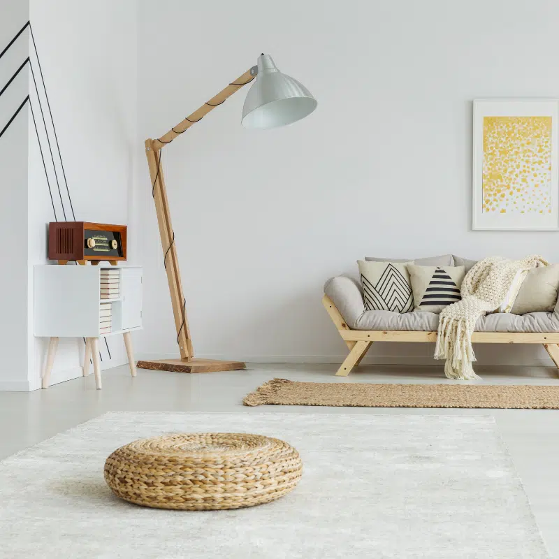
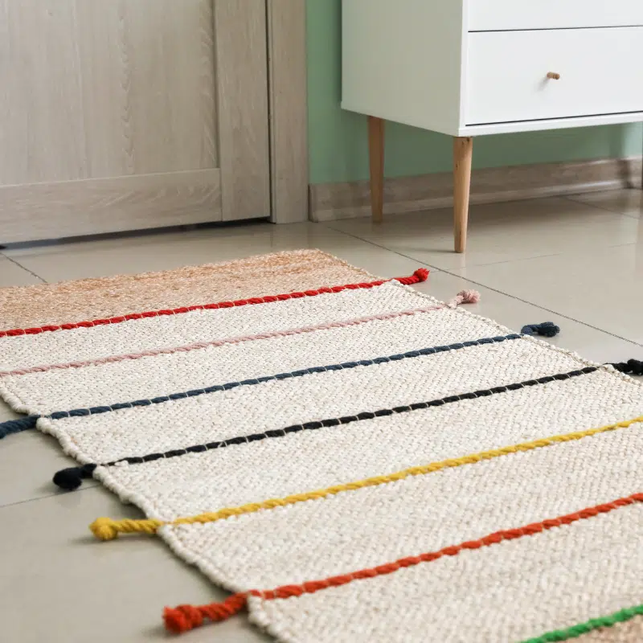

نقدم لكم أفضل حلول التنظيف
استعد جمال ونظافة سجادتك مع خدمات تنظيف السجاد الاحترافية من ماستر كلين. نحن نقدم حلول تنظيف متطورة باستخدام تقنيات حديثة وآمنة لإزالة البقع، الأوساخ، والروائح العالقة دون التأثير على جودة ألياف السجاد. فريقنا المتخصص يضمن لك نتائج مبهرة تجعل سجادتك تبدو جديدة مرة أخرى. اختر ماستر كلين للحصول على خدمة تنظيف شاملة تعيد الحيوية لمنزلك.

لماذا تحتاج شركة تنظيف سجاد؟
تنظيف السجاد من أكثر التحديات والمشاكل التي تواجه ربة المنزل، السجاد من المفروشات الأكثر عرضة للاتساخات اليومية بحكم أنه يتم استخدامه بشكل يومي، قد يتعرض للانسكاب أو البقع أو الأوساخ اليومية مثل بقع الطعام، وضع القهوة الداكنة التي تحتوي على السكر الداكن المودرن
الأطفال دائماً ما يلعبون بالألوان ويمكنون على الحوائط والسجاد والجدران، يتعرض السجاد للاتساخات بشكل مستمر تجد ربة المنزل واقفة أمام هذه البقع الصعبة، وتحتاج لتنظيف السجاد بطريق متعانة والتخلص من الروائح الكريهة.
مع شركة ماستر كلين نقدم لك أفضل الحلول في غسيل السجاد وتعقيمه وتطهيره السجاد ونساعد أن يرجع لحالته الأصلية كما كان باستخدام تقنيات خبرة أهمها استخدام تقنية البخار
شركة تنظيف السجاد
استمتع بخدمات تنظيف وغسيل السجاد بالبخار مع ماستر كلين، وتخلص من الأتربة والبقع التي تهدد راحتك ونظافة منزلك!

شركة تنظيف سجاد بالبخار بالخبر

شركة تنظيف سجاد بالبخار بالدمام

شركة تنظيف سجاد بالبخار بجدة

شركة تنظيف سجاد بالبخار بمكة
شركة تنظيف سجاد بالبخار بالخبر
شركة تنظيف سجاد بالبخار بالدمام
خدمة تنظيف السجاد
تنظيف السجاد من أكثر الخدمات التي تهم أي سيدة في منزلها، تراج الأتربة والبقع في السجاد يسبب لها مشاكل نفسية وصحية، لان نظافة المنازل من نظافة أصحابها، تقدم ماسر كلين خدمات للتنظيف خارقة لا تترك أي أثر وراءها بعد غسيل السجاد، يمكن أن تستخدم خدمات التنظيف باستخدام مسحوق تنظيف السجاد باستخدام الخل الأبيض مع الماء باستخدام فرشاة لفرك البقع و التخلص من الروائح الكريهة التي يسببها بقع الأوساخ والحيوانات الأليفة المقيمة داخل المنزل.
خدمة تنظيف السجاد بالبخار
إذا كنت تبحث عن طريقة فعالة وآمنة لتنظيف السجاد وإزالة البقع العالقة والروائح الكريهة، فإن تقنية التنظيف بالبخار من خلال شركتنا شركة ماستر كلين تعتبر من أفضل الطرق للحصول على نظافة عميقة دون إتلاف الألياف والأنسجة للسجاد، تعتمد هذه الطريقة على استخدام المكنسة الكهربائية المزودة بوظيفة البخار والماء، والتي تعمل على استخراج البقع والأوساخ وإزالتها بفعالية من أعماق النسيج.
عملية تنظيف السجاد تقوم بها شركة ماستر كلين عن طريق وضع الماء الساخن في وعاء صغير داخل الجهاز، مع إضافة المنظف المناسب لضمان تنظيف عميق، بعد ذلك، يتم تمرير الجهاز بالفرشة فوق السجاد لإزالة البقع وإزالة الأوساخ المتراكمة، هذه الطريقة من الطرق المناسبة جدا لإزالة الروائح غير المرغوب فيها، مما يجعل السجاد نظيف طوال الوقت.
عملية تنظيف السجاد تقوم بها شركة ماستر كلين عن طريق وضع الماء الساخن في وعاء صغير داخل الجهاز، مع إضافة المنظف المناسب لضمان تنظيف عميق، بعد ذلك، يتم تمرير الجهاز بالفرشة فوق السجاد لإزالة البقع وإزالة الأوساخ المتراكمة، هذه الطريقة من الطرق المناسبة جدا لإزالة الروائح غير المرغوب فيها، مما يجعل السجاد نظيف طوال الوقت.
إضافة إلى السجاد، يمكن تنفيذ هذه التقنية بالبخار لتنظيف الملابس، والموكيت، والمفروشات، الحساسة التي تحتاج إلى التنظيف الجاف، تنظيف السجاد بالبخار يضمن الحفاظ على الأقمشة بحالة جيدة ويوفر حماية إضافية من البكتيريا والجراثيم، إذا كنت تريد استعادة نظافة سجادك بأفضل طريقة، يمكنك الاعتماد على تنظيف البخار من خلال شركة ماستر كلين لتحصل على أفضل النتائج.
علامات تدل على ضرورة تنظيف السجاد

ظهور الحشرات

حساسية مفاجئة

روائح غير مستحبة

اتساخ الاثاث

بقع على السجاد
ظهور الحشرات
اتساخ الاثاث
لماذا ماستر كلين أفضل شركة تنظيف السجاد
التنظيف بشكل مستمر للسجاد يساعد فريق العمل من ماستر كلين على تنظيف البقع الصعبة بشكل فعال، نقوم باستخدام أحدث التقنيات والوسائل لتنظيف السجاد نستورد أحدث أدوات المعالجة بالبخار وغيرها من أدوات التنظيف في مواجهة أي آثار عالقة لمدة طويلة، نحن الأفضل لاستخدامها هذه التقنيات التالية.
-
تقنية التنظيف بالبخار العميق
تعتمد هذه الطريقة من ماستر كلين على تسخين كمية من الماء الدافئ وتحويله إلى بخار مضغوط قادر على اختراق ألياف السجاد بعمق.
- يتم ضخ البخار على السطح، مما يساعد في تفكيك الأوساخ والبقع العالقة، ثم يتم سحبها باستخدام مكنسة كهربائية قوية.
- هذه الطريقة فعالة في إزالة الأوساخ والبكتيريا والروائح المزعجة، كما أنها خالية من المواد الكيميائية الضارة.
-
التنظيف الجاف بالبودرة الفعالة
هذه الطريقة مناسبة جداً للسجاد الحساس والناعم الذي لا يتحمل الرطوبة العالية، يتم استخدام المسحوق الخاص بالتنظيف، والذي يحتوي على منتجات تمتص الدهون والأوساخ، ثم يتم مرك المسحوق في الألياف باستخدام فرشاة تنظيف السجاد والموكيت متخصصة ثرك مسحوق التنظيف لفترة قبل إزالة الألياف باستخدام مكنسة كهربائية، مما يضمن تنظيف فعال للسجاد الخاص.
-
تقنية الشامبو الرقمي
يتم استخدام شامبو خاص للسجاد يحتوي على تركيبة تنظيف قوية، أولاً، يتم رش كوب من الماء الدافئ مع كوب من شامبو السجاد، ثم ثرك الخليط على السطح باستخدام فرشاة ناعمة أو فرشاة دوارة، بعد التنظيف، يتم شطف السجاد بالماء جيداً لتجفيف المنطقة باستخدام مكنسة كهربائية متخصصة للشفط الرطوبة المتبقية.
-
التنظيف البيئي بالمحاليل الطبيعية
للحفاظ على بيئة صحية، نقدم خدمة التنظيف باستخدام محاليل طبيعية مثل الخل والليمون وصودا الخبز يتم مزج معلقة في البيكنج صودا مع كوب من الخل والماء الدافئ، ثم يتم وضع الخليط على البقعة المتسخة وتركه لمدة مناسبة نطبق هذه الطريقة، هذه الطريقة تحمل 5 مزايا طبيعي للبقع دون التأثير على لون ونسيج السجاد.
-
استخدام محاليل منزلية لتنظيف البقع
هناك طريقة أخرى للبقع العنيدة، نستخدم سائل تنظيف متخصص يحتوي على صابون الأطباق ونشا الذرة وملح الطعام، يتم مزج جميع المكونات معاً حتى تكون تركيبة متجانسة، ثم يتم وضع الخليط على البقعة المتسخة وتركه بالماء ومسحة بقماشية نظيفة لضمان عدم ترك أي بقايا من الصابون أو المواد الأخرى.
-
استخدام العطريات الطبيعية
بعد انتهاء عملية التنظيف، نقوم بتطبيق عطر طبيعي يحتوي على مستخلصات الليمون والحل للتخلص من أي روائح كريهة، هذه الطريقة تساعد في الحفاظ على رائحة السجاد منعشة لفترات طويلة دون الحاجة لاستخدام مواد كيميائية قوية قد تؤثر على جودة النسيج في ماستر كلين، نحرص على تقديم خدمة تنظيف تناسب جميع أنواع السجاد سواء باستخدام التنظيف الجاف أو التنظيف بالشامبو أو المحاليل الطبيعية، بفضل تقنياتنا المتطورة، نضمن لك سجاد نظيف، خالي من الأوساخ، وبأطول عمر ممكن.
-
تقنية التنظيف بالموجات فوق الصوتية
تعتبر هذه التقنية من أحدث التقنيات في تنظيف السجاد، حيث يتم استخدام ذبذبات فوق صوتية تساعد على تفتيت الجزيئات الدقيقة من الأوساخ والبقع المستعصية، هذه الطريقة فعالة جدا في إزالة أصعب البقع دون الحاجة إلى استخدام كميات كبيرة من الماء أو المواد الكيميائية.
فوائد خدمة تنظيف السجاد

اطالة عمر السجاد

تحسين جودة الهواء الداخلى

توفير الوقت والمال

تعقيم شامل للسجاد
اطالة عمر السجاد
توفير الوقت والمال
خدمة غسيل السجاد مع ماستر كلين
تنظيف السجاجيد بطريقة صحيحة يعتبر خطوة مهمة وضرورية للحفاظ على جودتها ومظهرها الأصلي، في شركة ماستر كلين، نستخدم المحلول المناسب لكل نوع سجادة لضمان إزالة البقع والأتربة العميقة نهائيا. نوفر تقنيات تنظيف متطورة تعتمد على المنتجات الآمنة التي تساعد في غسل السجاد دون المساس بالأنسجة الداخلية له.
تنظيف السجاجيد بطريقة صحيحة يعتبر خطوة مهمة وضرورية للحفاظ على جودتها ومظهرها الأصلي، في شركة ماستر كلين، نستخدم المحلول المناسب لكل نوع سجادة لضمان إزالة البقع والأتربة العميقة نهائيا. نوفر تقنيات تنظيف متطورة تعتمد على المنتجات الآمنة التي تساعد في غسل السجاد دون المساس بالأنسجة الداخلية له.
تجفيف السجاد بطرق احترافية
بعد مهمة غسل السجاد، من المهم ضمان تجفيفه بشكل كامل لمنع تراكم الرطوبة أو ظهور روائح غير مرغوب فيها، ماستر كلين شركة تنظيف سجاد في السعودية، نستخدم أجهزة متطورة لتجفيف السجاد بسرعة دون أن يأخذ وقتا طويل.
يتم استخدام تيارات هواء ساخن وتقنيات شفط رطوبة قوية تساعد في تجفيف السجادة خلال ساعة واحدة تقريبا، كما نوفر خدمة تنظيف المجالس لضمان بيئة نظيفة وصحية في كل ركن من أركان المنزل.
تلميع السجاد واستعادة رونقه
لإعادة بريق السجاد، نقوم بتحضير تركيبة خاصة من المنتج السائل مع خل و معلقتين من الملح لضمان تنظيف وتلميع السجاد بشكل فعال، يتم بإحضار زجاجة تحتوي على المحلول المخصص، ثم بخلط المكونات جيدا لتكوين محلول قوي يعزز لمعان السجاد و يزيل الروائح الغير مستحبة.
ثم يتم تطبيق المزيج على السجاد باستخدام قطعة قماش ناعمة أو فرشاة، وبعد ذلك يترك ليجف تماما، يقوم فريق ماستر كلين بالتلميع النهائي باستخدام مواد خاصة تضيف طبقة حماية تمنع تراكم الغبار بسهولة، مما يجعل السجاد يبدو وكأنه يستخدم لأول مرة.
افضل شركة تنظيف السجاد والموكيت
لا تدع البقع والاوساخ تصبح مصدر إزعاجك من الآن في ماستر كلين لا تقلق بشأن أي اتساخات موجودة على السجاد أو المفروشات بأكملها، نحن نوفر خدمات شاملة لتنظيف السجاد والمفروشات المنزلية باستخدام أحدث المنتجات والتقنيات سواء كنت بحاجة إلى تنظيف سريع أو صيانة دورية، نحن نضمن لك نتائج احترافية باستخدام مواد تنظيف متوفرة وآمنة تناسب جميع أنواع السجاد.
- نوفر أفضل الأسعار مقابل الخدمة والجودة التي تقدمها لكم.
- يمكنك التواصل معنا الأن وتتعرف علي العروض المقدمة من شركة ماستر كلين لمهة تنظيف السجاد.
- نرسل لك أفراد من شركتنا لمعاينة السجاد و إخبارك بكل خطوة سنقوم بها والأدوات التي نستخدمها في مهمة التنظيف.

اسئلة شائعة
يُفضل تنظيف السجاد بعمق مرة كل 1-2 شهرًا للحفاظ على نظافته وجودة
أليافه، مع تنظيفه أسبوعيًا بالمكنسة لإزالة الغبار.
نعم، نقدم خدمات تنظيف السجاد في المنازل والمكاتب، ونغطي مختلف
المساحات وفق احتياجات العملاء.
حسب توفر المواعيد، يمكننا تقديم الخدمة في نفس اليوم أو ترتيب
موعد يناسبك.
يمكن إزالة معظم البقع باستخدام تقنيات التنظيف المتطورة، ولكن بعض
البقع القديمة أو العنيدة قد تكون صعبة الإزالة بالكامل.
خدمات ماستر كلين الاخرى

خدمات الصيانة الصيانة

خدمات تنظيف المكيفات

خدمات تنظيف المنازل

خدمات عزل الاسطح

خدمات مكافحة الحشرات/p>

خدمات تنظيف الخزانات